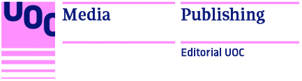

Libros de Editorial UOC
Título Autor Colección Temática Idioma Formato Precio
El mobile marketing y las apps Adrià Montiel Vallvé Manuales Ciencia, Tecnología, Informática Español Papel 16 €
Comunicación de riesgo y estudio de caso Encarnación Rodríguez Perea Dircom Ciencia, Tecnología, Informática Español Papel 30.50 € EPUB 9.99 € PDF 30.50 €
Big Data Montserrat García-Alsina EPI Ciencia, Tecnología, Informática Español Papel 15 €
Pantallas electorales Guillermo López García Manuales Derecho y Ciencia Política Español Papel 26 €
La comunicación corporativa Jordi Morató Bullido Quiero Saber Comunicación y Sociología Español EPUB 6,99 €
De fora vindran Aleix Ravelo Betancor Novelette Psicología y Educación Catalán PDF 12 € EPUB 6.99 € PDF 12 €
Entre abril y julio de 2017 todos los libros en formato digital (EPUB o PDF) tienen un 10% de descuento.